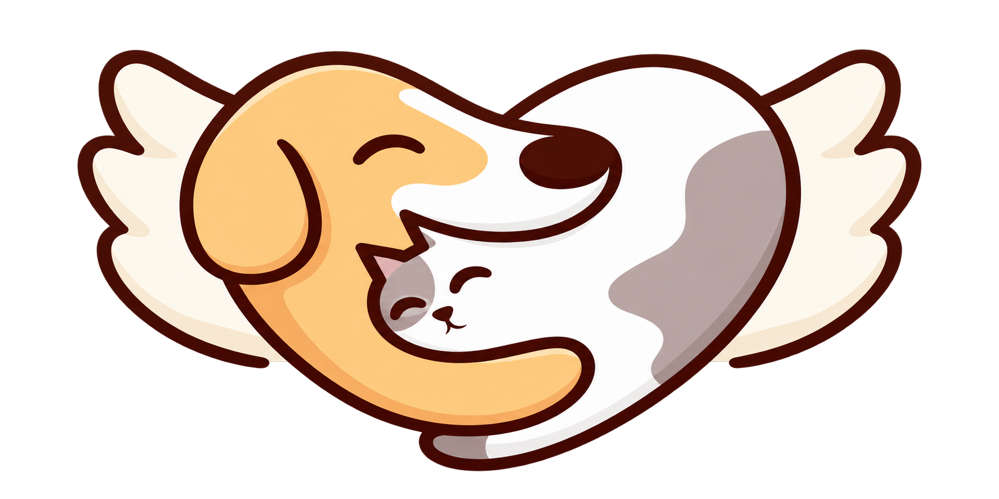

Gestão do blog
Visitar o portal ↗Novo artigo
Artigos cadastrados
Desmarque “Publicar no site” e salve para retirar um artigo do ar. Rascunhos são visíveis somente à equipe.

Desmarque “Publicar no site” e salve para retirar um artigo do ar. Rascunhos são visíveis somente à equipe.